进入夏天以后，各种水果先后上市，就像一首宋词里写的:“墙根新笋看成竹，青梅老尽樱桃熟。”
樱桃，我给它取了一个名字，叫作心之果，就是养护心脏的水果。
自古以来，我们的祖先就知道樱桃是可以补心气、养心血的。现在国外的营养学家通过研究发现 ，樱桃的确是有养护心脏功效的，所以把它称为“心脏的阿司匹林”。
阿司匹林可以抗血栓，常用在心脑血管病的治疗中。我们把樱桃叫作心脏的阿司匹林，还把它的作用说窄了，樱桃的功效其实比阿司匹林更胜一筹。
樱桃是活血的，也是暖心的，它不仅能使血脉畅通，还能温暖心阳。
阿司匹林会使人发汗，如果长期使用，容易使人阴虚。而吃樱桃不会让人发汗阴虚，反而还有补心血的作用。这是樱桃跟阿司匹林的两大不同点。
樱桃不是药物，但它除了能养护心脏，还有补养身体的作用。
一般的水果含铁不多，但樱桃的含铁量大约是苹果的几十倍，因此，缺铁性贫血的朋友，平常可以多吃些樱桃。
樱桃不仅能养心养血，对于女性来说还有养颜的作用。
樱桃除了含铁量在水果中是数一数二的外，它含有的其他营养物质，比如，糖、磷、胡萝卜素、维生素C也挺多。因此，经常吃樱桃对女性的皮肤大有好处。同时也能让女性的气色变得更加好看。
对老年人来说，吃樱桃既能祛风湿，又能生阳气。吃了以后，会让人精神头十足，手脚更有力量。
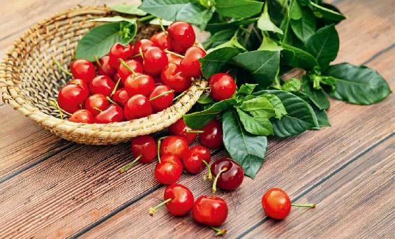
读者评论：每次吃完樱桃，都会觉得精神头立刻改善了很多
玉兔_vu：老师，樱桃的作用真的很奇妙！以前还没跟着老师养生的时候，一到天气转热就没力气，特别是闷热的天气心脏更难受。去年感觉好了很多，今年基本没有哪里不舒服了，气色好了，身体健康了，精神也好了，精力充沛。在此感谢陈老师！
刘林林：我有低血压、低血糖，我每次吃完樱桃，都会觉得精神头立刻改善了很多。原来这就是原因，真棒。
在市面上，常见的樱桃被分成三类，每一类都有各自独特的营养成分和功效。
第一类是现在市场上最常见的大樱桃。
大樱桃并不是中国原有的品种，它是100多年前才从国外引进的，学名叫欧洲甜樱桃。
欧洲甜樱桃在北方地区种得比较多，比如，山东就是一个很主要的产区。
我们在超市看到的进口水果，有一种叫车厘子，也是大樱桃的一种。车厘子是英文Cherry的音译。
不管是车厘子也好，还是国产的西洋品种的大樱桃也好，它们都属于欧洲甜樱桃。
樱桃除了具有养心、养血、养颜的作用外，对低血压的女性也很有帮助。比如，一些年轻的女孩子血压比较低，一到下午的时候，就觉得没精神，有时候蹲下再站起来会眼前发黑、眼冒金星，出现体位性眩晕。有这种情况的女性，可以经常吃一些大樱桃。
第二类是小樱桃。其实，小樱桃才是中国原产的，学名叫作中国樱桃。
中国樱桃就是古人在“红了樱桃，绿了芭蕉”诗里写到的樱桃。
古人见到的就是这种小樱桃，它是中国自古以来就有的品种，但现在反而很多城市里的朋友对这个小樱桃不熟悉了，原因在于小樱桃跟大樱桃不一样。小樱桃的皮比较薄，相对来说，不是非常方便长途运输，所以在小樱桃产区的朋友会对小樱桃非常熟悉，但不在小樱桃产区的朋友，在市场上就不太容易见到小樱桃。
如果单论樱桃对心脏保健作用的话，小樱桃的作用比大樱桃要好一些。
生活在小樱桃产区的朋友们，我建议您可以多吃一些小樱桃。
第三类是一种野生的品种，叫毛樱桃。
毛樱桃是由野生的山樱演变而来的，通常我们在市面上不太容易见到，因为它的口感没那么好，所以卖的人很少。
毛樱桃比小樱桃还要小一些，皮非常薄。
毛樱桃跟普通樱桃之间如何区别呢？
第一，毛樱桃树的叶子背面是有毛的。
如果您见到一株樱桃树，摸一摸它的叶子，叶片比较光滑的是普通樱桃树，而叶片背面带有绒毛的就是毛樱桃树。
第二，看它的果柄。
如果果柄是长长的，那是普通樱桃；而毛樱桃的果柄很短。
第三，口感。
毛樱桃相对比较酸，肉也比较少，核比较大，口感不好。这也就是它没有被广泛种植和在市场上售卖的原因。
为什么我要专门讲毛樱桃呢？因为毛樱桃的食疗作用很强。
它侧重于治疗关节炎，如果要用樱桃泡酒来调理关节炎的话，建议用毛樱桃。
毛樱桃跟普通樱桃还有一点不一样——它不容易使人上火。
樱桃是温性的，而毛樱桃相对就比较偏于平性。我专门在自己家的后院种了一株毛樱桃树，原因就是看中了它这样的食疗功效。
如果您真的找不到毛樱桃，也不要着急，只要是樱桃，就都具有养心、养颜、生阳气的作用。不管是味道比较甜，还是比较酸的樱桃，只要您在芒种这个时令多吃一些，就能养护心脏。
有传闻说樱桃核有毒，有人吃了5颗樱桃，就晕倒了。还说樱桃核里面含有有毒的氰苷，它进入胃里后会产生剧毒的氢氰酸。这个传闻是不是真实的呢？
我可以非常负责地告诉您，这个是谣言。而且这个谣言并不是从现在才开始传的，它已经流传了好长时间了。虽然樱桃核里含有非常微量的氰苷，但不是樱桃独有的。很多水果的果核都含有这种物质，如桃、李子、杏。
氰苷进入胃里后，会产生微量的氢氰酸。这也是我一直不主张把水果的果核嚼碎了吃下去的原因。因为这种微量的氢氰酸积累多了，比如，您一次吃了很多的果核，那它就可能刺激肠胃，引起呕吐、拉肚子。但这是必须要有一定的量才能达到的。
我们平时吃樱桃的时候，即便不小心嚼碎或者咽下几颗樱桃核，是达不到这样效果的，更不要说让人中毒了。
如果有人非要钻牛角尖，说氢氰酸积累到多少量能使人中毒的话，那基本上来说，一个人一次可能要吃上5斤（2.5千克）的樱桃核，才有可能让人中毒。而这是我们平常吃樱桃做不到的，您不用担心。
有些孕妇特别担心自己吃樱桃不小心咽了一颗核下去，担心会对肚子里的宝宝有影响。这也是没有必要担心的。
作为孕妇，特别是孕中期的孕妇来说，适当吃点樱桃，对身体是很好的。因为樱桃在水果中的补铁作用非常突出。
在孕中期，由于胎儿发育很快，有时候容易出现缺铁性贫血，在这时候可以吃一些樱桃，来补一补铁。您不必担心樱桃核里的一点微乎其微的毒素。
其实，如果我们认真追究起来，大多数的食物都可能有一点点毒的，比如土豆，它的皮里就含有龙葵素，这个也是有毒的，如果积累到一定量也是有可能致命的。但我们几乎没有听说谁吃土豆出事，这就说明，我们平时按正常量来吃食物是不会有事的。
关于樱桃核对儿童的作用，我有亲身的经验。我的孩子从小吃毛樱桃，毛樱桃的核特别大，肉又特别少，他嫌麻烦，经常趁我们不注意就直接连果肉带核整个给吃了。可能是从三岁开始，他就这样吃，但从来没有出现过任何问题，连拉肚子都没出现过。
当然，小孩子可不要学这个方法，正常吃樱桃的果肉就可以了，我只是用这个例子说明，即便我们误吞了一些樱桃核，对身体也是没有什么影响的。
什么时候要注意樱桃核对身体的影响呢？那就是在榨汁的时候。
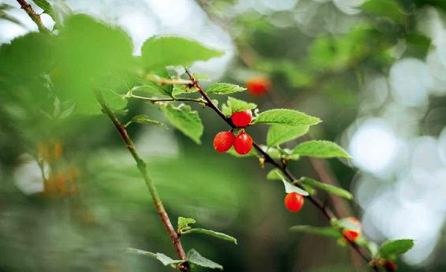
您在家里用樱桃来榨汁的时候，我建议您去掉核，如果用大量的樱桃榨汁又不去核，把核也一起打碎的话，喝下去是有可能引起胃肠的刺激性反应的，有可能会恶心、呕吐或者拉肚子。
关于樱桃的第二个传闻，就是樱桃里面都有虫，不能吃，这个传闻前几年也曾经火过一阵子，导致很多人都不敢再吃樱桃。
有时候我们真的不能去轻信一些传言。
个别樱桃有虫是什么原因呢？只有一种可能性：樱桃在结果的时候，天下了雨。因为下雨时气温比较低，樱桃结果的时间会比较晚，果蝇在果子上面产卵，容易孵化出小小的白虫，但这种情况其实是非常少见的。
我家有三株樱桃树，上面结的樱桃从来不打药，但我从没发现这些樱桃长虫。一般来说，果园里的樱桃是经过果农精心养护的，它们长虫的概率是非常小的。即便万一有果蝇的幼虫，您其实也不用太担心，把它泡洗掉就行了。
您从市场上买回来的樱桃，可以用淡盐水泡上10分钟，然后再把樱桃冲洗干净就毫无问题了。
洗樱桃时还要注意：洗樱桃之前，不要把樱桃的果柄去掉。
很多人在洗樱桃之前，都喜欢把果柄先去了，然后再来泡洗。其实，当去掉果柄之后，果皮就会有一点点破损，这时再来泡洗樱桃，就容易污染到果肉。
正确的做法应该是先泡洗樱桃，等泡洗干净后再把果柄摘掉，这样就不会污染到果肉了。
樱桃是温性的，您正在上火、风热感冒、咳嗽的时候，暂时不要吃，特别是小孩子正在咳嗽的时候，也要禁吃樱桃。
樱桃是生阳气的，也是一种发物。如果有的朋友患有过敏性哮喘、过敏性皮肤病，在发作期内，建议不要吃樱桃。
没有上面说的这几种情况的话，我建议您在整个仲夏时节适当地吃一些樱桃，可以养护自己的心阳、心血。
仲夏时节是一年中日出时间最早的一个月，从养生角度来说，应该是我们在一年中起床时间最早的一个月。
在北京，每天基本上4点半天就发亮了。
进入6月以来，我在北京每天都是4点多就醒，然后出去跑一跑、走一走，吸收天地之间的阳气，迎接清晨的日出，这样一天都会觉得很精神。
有些朋友可能觉得早上起这么早，太违背自己平时的作息规律了。其实，如果我们能顺应天地之间的节奏，作息规律就可以做到自然地调节。
我每天早上4点多醒来，并不需要闹钟的提醒。这里有我自己的一个小经验——吃樱桃。
从端午节过后，我就每天吃樱桃。樱桃含有一种叫褪黑素的物质，也就是俗称的脑白金。
褪黑素有什么作用呢？最早它是用来倒时差的，可以调节人体的生物节律，调节季节节律，帮助人们适应季节的转换。
其实，褪黑素还有别的好处，它是可以催眠的，但它跟安眠药又不一样，它能让人在黑夜来临的时候安睡，但白天又不会让人昏沉；还有镇静、止痛、抗抑郁的作用。
在医学上，还用褪黑素来辅助治疗心血管疾病和癌症。
我们人体能少量地分泌褪黑素，也可以通过食物来补充。
如果我们从小就培养孩子早睡早起的习惯，跟着天地之间的节律来走的话，对于他们终身的健康都是非常好的。我建议，如果您觉得孩子早上起不来，那您不妨给他多喝一些樱桃甜汤来帮助他。
樱桃虽然好吃，但有些朋友吃多了以后牙齿会酸到，因为樱桃含有比较多的维C和果酸。
如果孩子怕酸，不想吃樱桃，您可以把它煮成樱桃糖水来给孩子当饮料喝。
樱桃糖水
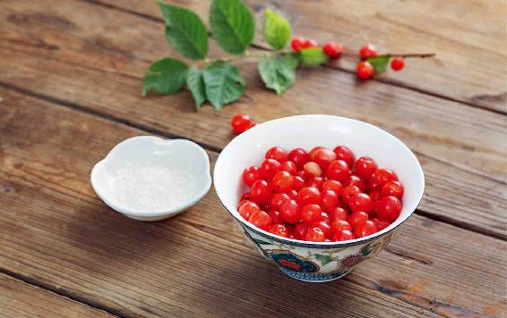
原料：樱桃、白糖（或者蜂蜜）。
做法：
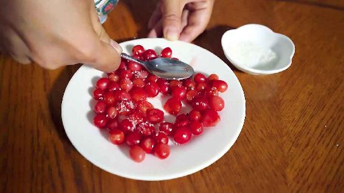
1.先把樱桃用盐水泡洗干净，然后放到碗里用勺子背压破。如果是大樱桃，您可以用刀切一下，或者用榨汁机来打一下，但都要先去核。
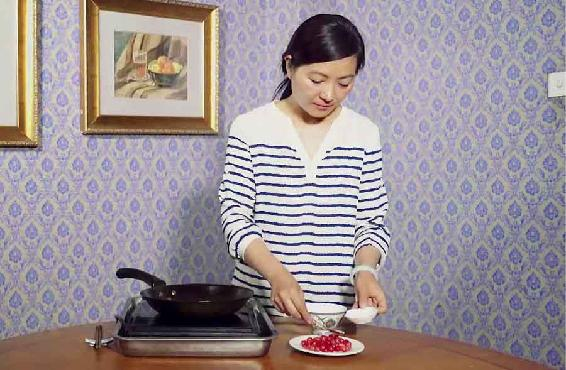
2.放入一点儿白糖或者蜂蜜给它腌一会儿。
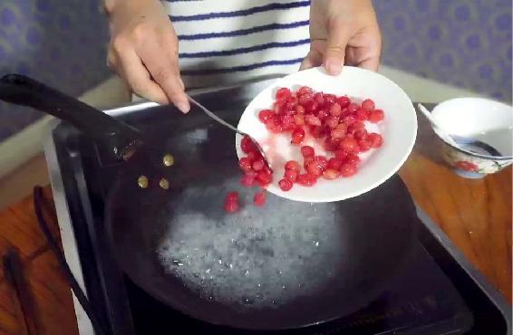
3.锅里加水烧开，放入用糖腌制过的樱桃，煮上两三分钟就可以关火了。
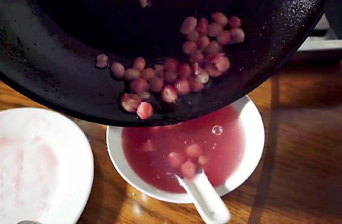
4.把樱桃核过滤掉，剩下的就是樱桃糖水了。如果喝不完可以放到冰箱保存。
樱桃糖水
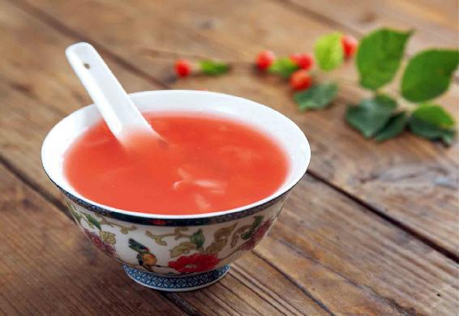
樱桃甜汤，它不仅有樱桃的作用，里面还加入了鸡蛋和醪糟，因此，这是一道大补的汤。
读者评论：孩子们也超级喜欢喝
MZ_：每天早上喝樱桃甜汤，孩子们也超级喜欢喝，认识老师真好，不然好多简单又营养的东西不知道怎么利用。
原料：樱桃、鸡蛋、醪糟。
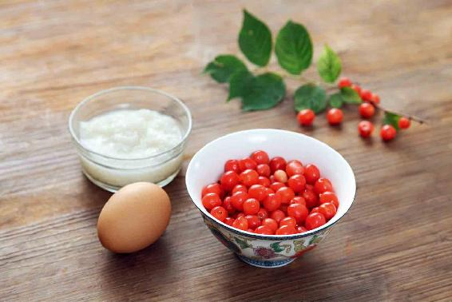
做法：
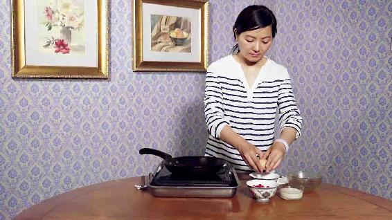
1.把樱桃用盐水泡洗干净，再去掉它的果柄。
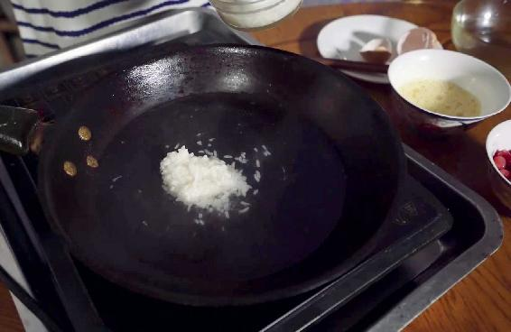
2.锅里加水烧开，先舀几勺醪糟进去，然后再放入樱桃煮上几分钟，记住不要盖锅盖，而且要用大火来煮，不然的话，容易把樱桃的营养成分给流失了。因为大火可以很快地把樱桃煮熟，又不会让营养成分流失太多。
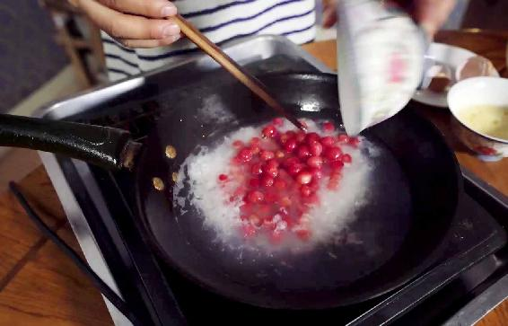
3.把鸡蛋打散倒进锅里，用筷子迅速地搅散变成蛋花的形状，这样就可以关火起锅了。
功效：
1.喝樱桃甜汤可以补到人的心血，对于气血亏虚的女性来说，是一道很好的滋补品。
2.喝樱桃甜汤可以滋润皮肤，对于皮肤角质层的生长也很有帮助。
3.对平时身体虚弱、脸色苍白的女性有很大的好处，可以改善晚上睡不安宁，经常难以入睡的状况。
4. 有些女性，晚上睡觉必须得把窗帘拉得严严的，一点光都不能有，一点声音都不能有，不然就难以入睡。这就是一种亚失眠的状态，多吃樱桃就会有改善。
5. 可以养护心脏。有些朋友心脏功能比较虚弱，或者是有心血管疾病，那您就可以在仲夏时节喝顺时的樱桃甜汤来保健。还有一些朋友，在仲夏季节容易有心悸的现象，喝了这道汤以后，也会有所改善。
樱桃甜汤特别适合女性朋友和小孩子来喝。不用担心醪糟的酒味，因为在用大火煮樱桃的时候，锅盖是不盖的，酒味已经散掉了。
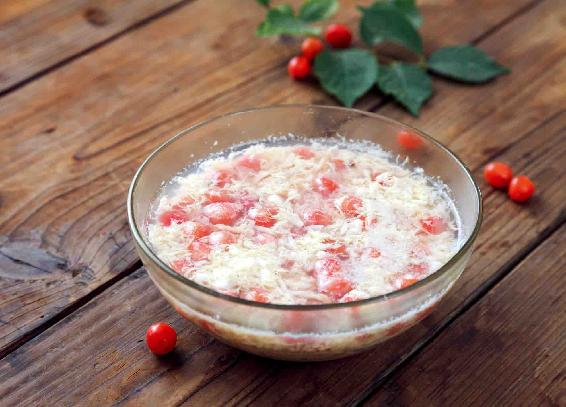
樱桃是春果第一枝，如果说前两个月吃樱桃是在尝鲜的话，那这个月吃樱桃就是在保健，在吃一味好药了。
樱桃是水果中的药物，而且是水果中的心药，它可以养护心脏，预防动脉硬化、降低血脂，还可以对抗与心脏有关的炎症和由此引起的疼痛。
古人还发现，樱桃对由风寒湿引起的关节性疼痛都有好处，它可以祛风、祛寒、祛湿。现代研究也发现，凡是炎症引起的疼痛，樱桃都能缓解。
樱桃是水果中比较难得的温性水果，祛寒的效果很好，但也正因为如此，吃太多会引起上火。
如果想要长期获得樱桃的保健作用，最好是细水长流地吃。在不产樱桃的季节，我们要想得到樱桃的保健作用，用樱桃泡酒是一个比较方便的方法。现在樱桃可以做成果干，吃起来就更方便了。
樱桃按种植环境可以分为两大类：一类是大棚樱桃，一类是露天樱桃。
大棚樱桃的成熟时间是非常早的，每年的三月份大棚樱桃就开始成熟了，因此，您在三四月份吃到的樱桃，大都是大棚樱桃。
露天樱桃要到什么时候才开始成熟呢？
露天樱桃要到五六月份才开始成熟、上市，到六月底，国产的樱桃就基本上过季了。七月份的时候，您在市面上再看到大樱桃，一般就是进口的车厘子了。每年的六月份是樱桃大量集中上市的时间，因此，仲夏时节的樱桃，价格是一年中最低的，此时正是我们大量采买樱桃回家泡酒的好时候。
现在市面上有一种樱桃露酒，但它调理关节炎的效果不如自制樱桃酒。因为自制的樱桃酒，樱桃的浸泡时间相对更长，在浸泡过程中，不仅有樱桃果肉的营养，还有樱桃核的营养，都会被酒吸收。
前面我讲过，有些朋友认为樱桃核有毒，其实不是这样，它只是含有微量的氰苷，但在浸泡过程中经过时间的转换，这点微量毒素对身体不会造成影响。
原料：樱桃500〜1000克，白酒或者黄酒2.5升。
做法：
1.先用盐水把樱桃泡洗干净，然后沥干水分。如果是大樱桃，要去掉果柄。
2.准备一个干净的玻璃瓶，往瓶里倒一点点白酒，拿起瓶子慢慢地旋转，让白酒充分地接触玻璃瓶的内壁，即给它消毒，然后沥干。
3.把樱桃放入瓶中，再把酒倒进去，盖上盖子，过十天就可以喝了。
允斌叮嘱：
1. 能喝酒就少放一点樱桃，不太能喝酒，就多放一点樱桃。
2. 如果您想要早一点喝到樱桃酒，可以每三天摇它一次，使它更快地变成粉红色。如果您想通过喝樱桃酒来调理风湿性关节炎、腰腿痛，那您就不要去摇它，最好是把它保存一两个月，这样它的味道会更好，调理的作用也会更强。
3. 樱桃酒可以保存很长的时间，可以慢慢地喝它。每天应喝半两到一两（25〜50毫升），最好是分成两次来喝，不要急于一次喝完，因为我们只是用来调理。
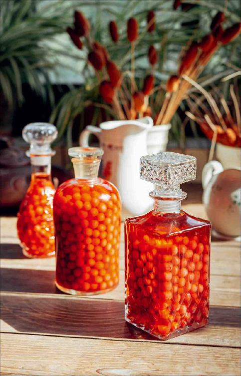
调理风湿性关节炎、类风湿关节炎、老年人的腰腿痛
它对老年人经常出现的四肢麻木也有好处，有些朋友在连续喝上七天以后，会感觉手臂麻木的症状缓解了。樱桃对于患有偏瘫的病人来说，也有一定的保健作用。
如果您实在不能喝酒，那您可以用樱桃酒来外擦关节疼痛的部位，也可以适当地吃一点儿泡过的樱桃。泡过的樱桃不仅可以吃，还可以用它来点缀蛋糕，也是非常漂亮的。
如果您是用比较高度的酒来泡樱桃，那您就多放一些樱桃，这样酒的度数就会变低。
另外，樱桃泡的时间越长，酒精的度数就会越低。因为樱桃和酒精之间发生了置换，樱桃泡得更有酒味了，同样酒也更有樱桃味儿了。
调治血瘀体质、常年手脚冰凉、冻疮
樱桃酒还有活血、暖身的功效。有一些血瘀体质的朋友，嘴唇经常发乌、发紫，都可以喝一点儿樱桃酒。
还有一年四季四肢都冰冷的朋友，特别是女性，也可以适当地喝一点儿樱桃酒。
泡过酒的樱桃，对于冻疮也是有治疗作用的。以前南方地区的冬天是没有暖气的，很多人都会长冻疮，这时候，把樱桃酒里的樱桃捞出来，如果是小樱桃就直接把它捏破，要是大樱桃把它切成两半，用果肉擦一擦长冻疮的部位，坚持擦三天，冻疮就会好转。
消炎，抗氧化，还可以抗病菌，溶栓
樱桃酒的颜色非常漂亮，是淡淡的粉红色，这种粉红色来自它的有效成分，主要是花青素和花色苷。
它们对身体有什么好处呢？可以消炎，抗氧化，还可以抗病菌，溶栓。
当您家里的樱桃酒保存了一年以上，酒的颜色会变红，这个时候，您光吃樱桃，已不能获得它全部的营养了，可以喝一点红色的酒，它里面含有大量的花青素和花色苷，对身体非常有好处。
读者评论：经常腿疼还肿，喝了樱桃酒以后就再没肿过
果子_hj：去年泡的樱桃酒喝了几天了，膝盖冷痛好多了，坚持喝下去，感谢老师！
真如_rk：我小学时每年长冻疮。奶奶种了樱桃树，第一年结樱桃就泡了樱桃酒，我抹了之后，就再也没长过冻疮，好神奇。
允斌粉：老师您好，我已经连续泡了三年樱桃酒了，第一年是给我妈妈泡的，我妈妈有风湿性关节炎，经常腿疼还肿，喝了樱桃酒以后就再没肿过，也没听我妈说疼，真是太神奇了。第二年我又给我爸泡了一桶。今年刚泡了樱桃酒是准备给我婆婆的。还不到一个月，酒已经变成粉色的了，特漂亮。还有好多您的方子我都给家人用过，非常荣幸能够认识老师，感恩老师，永远爱你。
允斌解惑：用高度白酒适合外擦，也更不容易坏
金灵：我有风湿性关节炎，想用黄酒泡点樱桃试试，可不可以呢？
允斌：内服可以用黄酒，外擦就需要度数高一些的白酒。
向日葵（年年有余）：泡好的樱桃酒要放冰箱，还是自然放外面？
允斌：正常泡的樱桃酒不用放冰箱，放外面就可以。用高度白酒更不容易坏。
开心果：能用大樱桃泡酒吗？
允斌：可以。
淑芬：芒种节气，樱桃酒和梅子酒可以交替着喝吗？
允斌：也可以的。
D：泡了五六年的樱桃酒还可以喝吗？
允斌：泡酒年份久一点也可以，只要没坏就行。